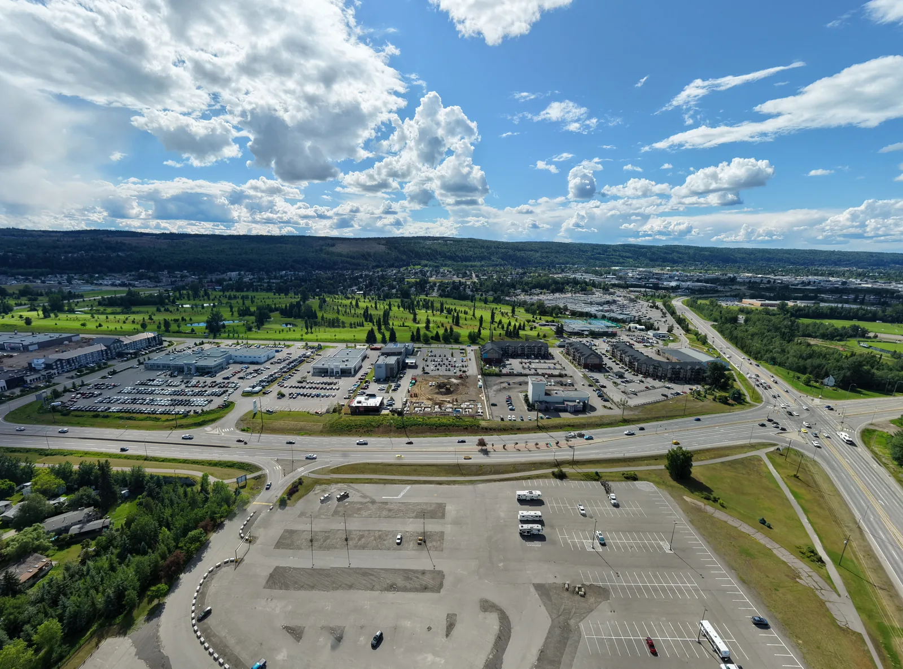

Location
2740 Recplace Drive, Prince George.
RECPLACE Professional Centre occupies an approximately 1.5-acre commercial site with highway visibility and direct access from Recplace Drive.
Site context
Access, visibility, and room to arrive.
The site sits within an established south-side commercial area near retail, dining, fitness, hospitality, and everyday services.
- Street address
- 2740 Recplace Drive
- City
- Prince George, BC
- Site area
- Approx. 1.5 acres
- Zoning
- C2 Regional Commercial
Map & directions
2740 Recplace DrivePrince George, BC V2N 1T7